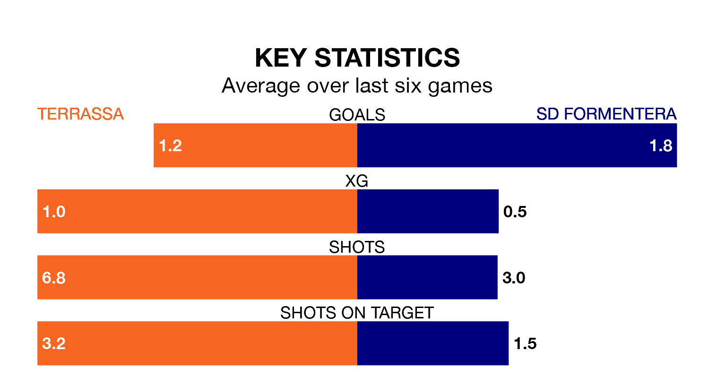

Both Terrassa and SD Formentera will be looking to extend their unbeaten runs on early Sunday.
The two sides have gone five Segunda División RFEF Group 3 matches since they last lost – during which Terrassa have won two and drawn three, and Formentera have taken three wins and two draws.
With 23 goals in 20 games so far this season, Terrassa are scoring at below the league average rate with 1.1 goals per game. And they are conceding more than average, letting in 26 goals at a rate of 1.3 per game.
Formentera, meanwhile, are average scorers, with 1.2 goals per game. They have also conceded 1.2 goals per game.
The hosts are 13th in the table after 20 games, of which they have won five and drawn nine, earning 24 points.
The away side are four places ahead of Terrassa in ninth, with seven wins and five draws putting them on 26 points.
In the last five years, Terrassa and Formentera have played each other on five occasions. Terrassa won one of them, Formentera three, and they drew once.
On average, Terrassa scored 1.2 goals and Formentera 1.8 in those matches.
Their last meeting was on September 24, when they played out a 1-1 draw.
Terrassa's last match was on Sunday, a 2-2 draw against Espanyol B.
Formentera drew 2-2 with La Nucía last time out, also on January 28.
Updated: 10:03 (UTC), 30/01/24